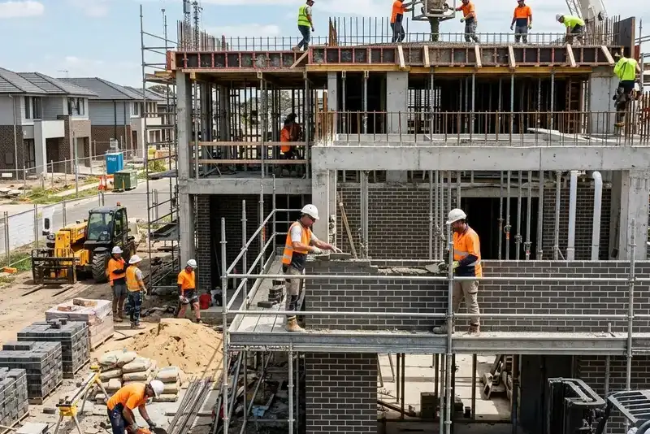

Daftar Isi
- Apa Itu Jasa Kontraktor Pembuatan Gudang?
- Manfaat Menggunakan Kontraktor Profesional
- Bagaimana Cara Kerja Kontraktor Gudang di Malang?
- Faktor yang Memengaruhi Kualitas dan Biaya Pembangunan Gudang
- Apa Saja Kesalahan Umum saat Membangun Gudang?
- Tips Memilih Kontraktor Gudang Terpercaya di Malang
- Gudang Baja atau Beton, Mana yang Lebih Cocok?
- FAQ
Kontraktor pembuatan gudang Malang adalah penyedia jasa konstruksi yang merancang dan membangun fasilitas gudang untuk kebutuhan industri, logistik, dan pergudangan komersial di wilayah Malang Raya.
- Kontraktor gudang menangani perencanaan, desain struktur, hingga serah terima bangunan siap pakai.
- Permintaan gudang modern di Jawa Timur terus meningkat seiring pertumbuhan sektor logistik dan e-commerce.
- Biaya pembangunan gudang dipengaruhi oleh material, luas lahan, dan spesifikasi teknis.
- Memilih kontraktor berpengalaman mengurangi risiko keterlambatan dan pembengkakan anggaran.
- Struktur baja dan beton adalah dua pilihan utama yang masing-masing punya kelebihan berbeda.
Apa Itu Jasa Kontraktor Pembuatan Gudang?
Jasa kontraktor pembuatan gudang adalah layanan konstruksi menyeluruh yang mencakup perencanaan desain, pengadaan material, pengerjaan struktur, hingga penyelesaian akhir bangunan gudang sesuai kebutuhan operasional klien.
Di Malang, layanan ini umumnya melayani dua segmen utama: gudang untuk kebutuhan industri manufaktur dan gudang untuk distribusi logistik atau e-commerce. Kedua segmen ini memiliki spesifikasi berbeda, mulai dari tinggi plafon, kekuatan lantai, hingga sistem sirkulasi udara.
Kontraktor profesional biasanya menawarkan layanan terintegrasi, mulai dari konsultasi kebutuhan, perhitungan Rencana Anggaran Biaya (RAB), pengurusan izin, hingga pengawasan proyek sampai serah terima kunci. Pendekatan ini penting agar gudang yang dibangun sesuai standar keselamatan dan efisien secara operasional dalam jangka panjang.
Bagi pelaku usaha di Malang, memahami cakupan layanan ini membantu menentukan ekspektasi yang realistis sejak awal proses konsultasi, termasuk estimasi waktu pengerjaan dan kebutuhan dokumen perizinan bangunan.
Manfaat Menggunakan Kontraktor Profesional untuk Membangun Gudang
Menggunakan kontraktor profesional memberi kepastian standar konstruksi, efisiensi waktu pengerjaan, dan jaminan kualitas bangunan gudang sesuai kebutuhan operasional dan anggaran yang telah disepakati bersama.
Beberapa manfaat utama yang umum dirasakan pengguna jasa kontraktor gudang meliputi:
- Kepastian standar teknis. Kontraktor berpengalaman memahami spesifikasi struktur yang aman untuk menahan beban berat, termasuk rak penyimpanan dan lalu lintas kendaraan operasional.
- Efisiensi waktu proyek. Tim yang sudah terbiasa menangani proyek gudang dapat menyusun jadwal kerja yang lebih realistis dan terkoordinasi antar tahapan.
- Pengelolaan anggaran yang lebih terukur. RAB disusun berdasarkan pengalaman proyek sejenis sehingga potensi biaya tak terduga dapat diminimalkan sejak awal.
- Bantuan pengurusan izin. Kontraktor yang memahami regulasi setempat dapat membantu mempercepat proses perizinan bangunan di wilayah Malang.
- Dukungan purnajual. Sebagian kontraktor menyediakan garansi struktur dan layanan perawatan setelah bangunan selesai.
Manfaat ini menjadi semakin relevan mengingat okupansi gudang modern di Jawa Timur, khususnya Surabaya dan sekitarnya, terus mendaki sejak 2022 dan kini berada pada kisaran 95 persen menurut riset Colliers Indonesia yang dipublikasikan awal 2026. Tingginya tingkat keterhunian ini mendorong pelaku usaha untuk membangun fasilitas gudang baru dengan standar yang matang sejak perencanaan awal.
Bagaimana Cara Kerja Kontraktor Gudang di Malang?
Kontraktor gudang di Malang umumnya bekerja melalui empat tahapan utama, yaitu konsultasi kebutuhan, perencanaan desain dan RAB, pelaksanaan konstruksi, serta pengawasan hingga serah terima bangunan.
Tahap konsultasi dan survei lokasi. Proses diawali dengan diskusi kebutuhan klien, meliputi luas area, kapasitas penyimpanan, dan aktivitas operasional yang akan berlangsung di dalam gudang. Kontraktor kemudian melakukan survei lapangan untuk menilai kondisi tanah dan aksesibilitas lokasi.
Tahap perencanaan desain dan anggaran. Pada tahap ini, tim teknis menyusun gambar kerja, spesifikasi material, serta RAB yang mencakup estimasi biaya menyeluruh. Klien biasanya diberikan beberapa opsi struktur, misalnya rangka baja ringan atau baja konvensional, sesuai kebutuhan dan anggaran yang tersedia.
Tahap pelaksanaan konstruksi. Setelah desain disepakati, pekerjaan fisik dimulai dari pondasi, pemasangan struktur rangka, pemasangan atap dan dinding, hingga instalasi sistem pendukung seperti listrik dan drainase.
Tahap pengawasan dan serah terima. Kontraktor melakukan pengecekan kualitas di setiap tahapan sebelum akhirnya menyerahkan bangunan yang telah selesai kepada klien, lengkap dengan dokumentasi teknis dan masa garansi struktur.
Durasi setiap tahapan dapat bervariasi tergantung skala proyek, kondisi lahan, dan kompleksitas desain yang diminta klien.
Faktor yang Memengaruhi Kualitas dan Biaya Pembangunan Gudang
Kualitas dan biaya pembangunan gudang dipengaruhi oleh beberapa faktor utama, yaitu jenis material struktur, luas dan kondisi lahan, spesifikasi teknis, serta lokasi proyek terhadap akses jalan utama.
- Jenis material struktur. Pilihan antara baja ringan, baja konvensional, atau beton bertulang memberikan perbedaan signifikan pada biaya dan daya tahan bangunan.
- Kondisi dan luas lahan. Lahan dengan kontur tidak rata memerlukan pekerjaan tambahan seperti pematangan tanah, yang berdampak pada total anggaran.
- Spesifikasi teknis khusus. Kebutuhan seperti tinggi plafon ekstra, lantai dengan kapasitas beban tinggi, atau sistem pendingin udara akan menambah biaya konstruksi.
- Lokasi proyek. Kemudahan akses jalan dan kedekatan dengan jalur distribusi utama turut memengaruhi efisiensi pengiriman material selama proses pembangunan.
- Regulasi dan perizinan setempat. Ketentuan tata ruang di wilayah Malang dapat memengaruhi desain akhir bangunan, termasuk ketinggian maksimal dan garis sempadan bangunan.
Tren permintaan gudang modern secara nasional turut menjadi konteks penting. Data Supply Chain Indonesia mencatat kinerja sektor transportasi dan pergudangan tumbuh sekitar 8,78 persen sepanjang 2025, didorong ekspansi e-commerce dan penguatan jaringan distribusi last mile delivery. Pertumbuhan ini turut mendorong permintaan fasilitas gudang baru di berbagai wilayah, termasuk Jawa Timur.
Apa Saja Kesalahan Umum saat Membangun Gudang?
Kesalahan umum saat membangun gudang meliputi perencanaan anggaran yang kurang matang, mengabaikan kondisi tanah, memilih material tanpa mempertimbangkan beban operasional, dan minimnya pengawasan selama proses konstruksi berlangsung.
Beberapa kesalahan yang sering ditemui di lapangan antara lain:
- Tidak melakukan survei tanah secara menyeluruh sebelum menentukan jenis pondasi.
- Memilih kontraktor hanya berdasarkan harga termurah tanpa mengecek portofolio dan legalitas usaha.
- Mengabaikan kebutuhan sistem drainase yang memadai, sehingga berisiko menimbulkan genangan saat musim hujan.
- Tidak menyusun kontrak kerja yang jelas terkait spesifikasi, jadwal, dan mekanisme pembayaran bertahap.
- Kurang memperhitungkan ruang gerak kendaraan operasional di dalam maupun sekitar gudang.
Kesalahan-kesalahan ini umumnya dapat dihindari dengan melibatkan kontraktor berpengalaman sejak tahap perencanaan awal, bukan hanya pada tahap pelaksanaan fisik. Pembahasan lebih rinci mengenai kesalahan umum dan tahapan kerja yang tepat dapat dibaca pada artikel terkait Tahapan Kerja Pembangunan Gudang di Malang.
Tips Memilih Kontraktor Gudang Terpercaya di Malang
Memilih kontraktor gudang terpercaya di Malang dapat dilakukan dengan mengecek portofolio proyek sejenis, legalitas usaha, transparansi RAB, serta ulasan atau referensi dari klien sebelumnya.
Beberapa hal yang perlu diperhatikan sebelum menentukan kontraktor:
- Periksa rekam jejak proyek gudang yang pernah dikerjakan, termasuk skala dan jenis strukturnya.
- Pastikan kontraktor memiliki legalitas usaha yang jelas, seperti Nomor Induk Berusaha (NIB) dan sertifikasi badan usaha konstruksi.
- Minta penjelasan detail mengenai RAB agar tidak ada biaya tersembunyi di tengah proyek.
- Tanyakan mekanisme garansi struktur dan layanan purnajual setelah bangunan selesai.
- Perhatikan komunikasi dan responsivitas tim kontraktor selama masa konsultasi awal.
Gudang Baja atau Beton, Mana yang Lebih Cocok?
Pemilihan antara struktur baja dan beton untuk gudang bergantung pada kebutuhan beban, anggaran, dan kecepatan pengerjaan, di mana baja umumnya lebih cepat dibangun sementara beton lebih unggul dari sisi daya tahan jangka panjang.
Struktur baja umumnya dipilih karena proses konstruksi lebih cepat, bobot bangunan lebih ringan, dan fleksibel untuk desain bentang lebar tanpa banyak kolom penyangga. Struktur ini cocok untuk gudang distribusi yang membutuhkan ruang penyimpanan luas dan proses pembangunan yang efisien secara waktu.
Struktur beton cenderung memiliki daya tahan lebih tinggi terhadap kondisi cuaca ekstrem dan kebutuhan beban statis yang sangat berat, misalnya untuk gudang penyimpanan bahan baku industri berat. Namun, waktu pengerjaan dan biaya awal biasanya lebih tinggi dibandingkan struktur baja.
Kontraktor berpengalaman biasanya akan menyesuaikan rekomendasi struktur berdasarkan jenis barang yang disimpan, estimasi anggaran, dan target waktu operasional gudang.